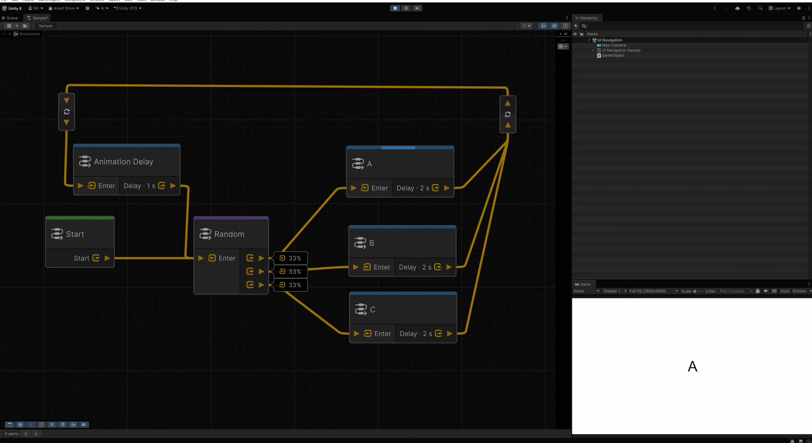

Navigation Graph
Navigation Graph는 UXML 계층과 분리해 화면 흐름을 정의합니다. UITK Navigation은 내부 편집 도구로 Unity Graph Toolkit을 사용하고, 각 .uinavgraph를 런타임용 UINavigationAsset으로 컴파일합니다.
에셋 처리 흐름
- Assets > Create > UI Navigation > UI Navigation Graph에서 그래프를 생성합니다.
- Graph Toolkit 창에서 노드와 연결을 편집합니다.
- 그래프를 저장합니다.
- Scripted Importer가 편집 모델을 검증하고 런타임 에셋을 다시 생성합니다.
- Play Mode와 빌드에서
UINavigatorBehaviour가 컴파일된 에셋을 읽습니다.
그래프 오류는 편집 에셋에 표시됩니다. 정상적으로 컴파일하려면 Start 노드가 정확히 하나여야 하고, 하나 이상의 화면 노드, 중복되지 않은 Screen ID, 유효한 연결 개수가 필요합니다.
노드
| 노드 | 역할 |
|---|---|
| Start | 그래프의 유일한 초기 경로 지정 |
| UI | View 명령 실행과 UI 기반 출력 정의 |
| Portal | 활성 UI보다 먼저 검사하는 전역 Button, Signal, Toggle 경로 |
| Random | 상대 Weight에 따라 연결된 분기 중 하나 선택 |
| Pivot | 런타임 동작 없이 그래프 배선을 중계하고 회전 |
| Time Scale | Time.timeScale을 변경한 뒤 Action Chain 계속 |
| Debug Log | Console에 Normal, Warning, Error 메시지 출력 |
| Load Scene | Single 또는 Additive 비동기 Scene 로드 시작 |
| Set Active Loaded Scene | 이미 로드된 Scene을 Active Scene으로 설정 |
| Unload Scene | 마지막 Scene을 보호하며 로드된 Scene 언로드 |
| Application Quit | 빌드 종료 또는 Editor Play Mode 정지 |
UI 경로
UI 노드에는 다음 출력을 추가할 수 있습니다.
| 출력 | 발생 원천 |
|---|---|
| UI Button | 같은 주소의 NavButton 또는 UINavigationEvents.RequestButtonSignal(...) |
| Signal | UINavigationEvents.RequestSignal(...) |
| Toggle | 같은 주소의 NavToggle; 조건은 On, Off, Any |
| Time Delay | 현재 노드가 활성인 동안 경과한 Unscaled Time |
| UI View | 같은 주소의 NavElement가 Animated Show 또는 Hide를 시작함 |
각 출력은 하나의 UI 또는 Action Chain으로 연결합니다. Portal은 전역 경로이며 활성 UI 노드의 출력보다 먼저 검사합니다.
UI View 출력은 Animated 전환 시작 Event만 수신합니다. Instant View 명령과 직접 호출한 InstantShow(), InstantHide()는 이 출력을 발생시키지 않습니다.
View 명령과 History
UI 노드는 진입과 이탈 시점에 등록된 View를 Show 또는 Hide할 수 있습니다. 각 View 명령은 Animated와 Instant 중 하나를 선택합니다. 한 전환에서 같은 View가 Show와 Hide 대상에 모두 포함되면 Show가 우선합니다.
기본 UI 출력은 Push 전환으로 작성됩니다. 연결된 Action Chain이 다른 Screen에 도달하면 이전 노드를 Back History에 저장하고, Terminal Action Chain이면 Action만 실행합니다. Use Back은 Push 전환 작성 여부가 아니라 현재 활성 노드가 Back 요청을 받았을 때 UINavigationService.Back()을 호출할지를 결정합니다. Escape, Backspace, 마우스 Back/Forward 입력은 UIBackInputRouter를 추가하거나 코드에서 Back()과 Forward()를 호출하세요. 표시 중인 View나 최상위 팝업이 그래프보다 먼저 Back을 소비할 수 있습니다.
로그인 완료 후나 Title 화면으로 복귀할 때처럼 이전 이동 기록을 폐기해야 한다면 UI 노드의 Clear History를 사용하세요. 이 노드에 진입할 때 Back과 Forward Stack을 모두 비웁니다.
Play Mode 추적
Tools > UI Navigation > Follow Play Mode In Graph를 활성화하면 실행 중인 노드가 그래프에 강조됩니다. 주소가 여러 경로와 맞거나 Action Chain 때문에 흐름이 복잡할 때 유용합니다.
